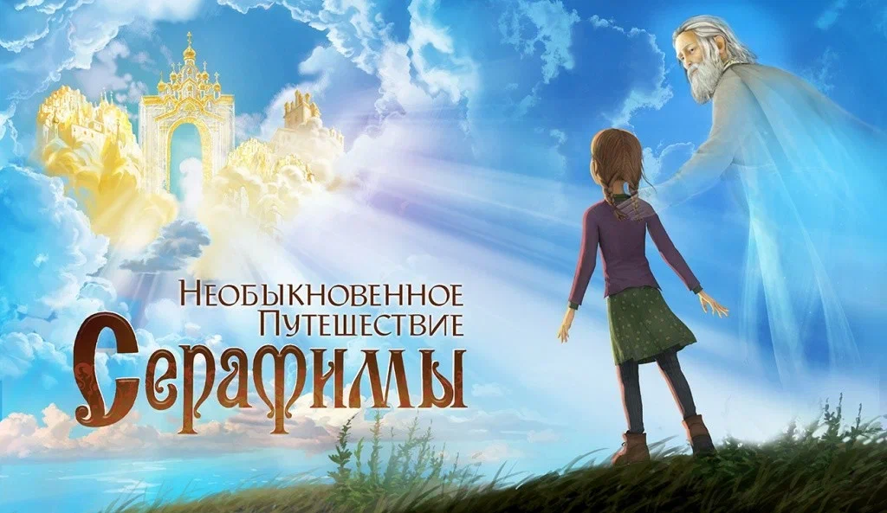
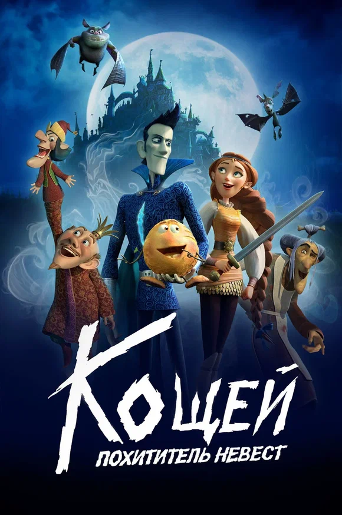
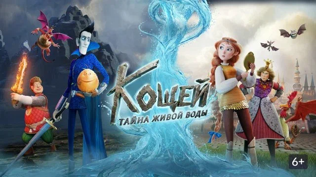

Необыкновенное путешествие Серафимы
Анимационный фильм · 2015
Роль: режиссёр.
Награды: Гран-при кинофестиваля «Покров», специальный диплом фестиваля «Лучезарный Ангел», премия «Золотой орёл» в номинации «Лучший анимационный фильм».

Режиссёр, аниматор, продюсер и педагог. В анимации с 1990 года. Работал на студиях «Пилот», «Союзмультфильм», «КиноАтис», «Анимаккорд». В проекте «Мастера России» отвечает за режиссуру, творческую концепцию и сценарную работу.
← Ко всей команде
Анимационный фильм · 2015
Роль: режиссёр.
Награды: Гран-при кинофестиваля «Покров», специальный диплом фестиваля «Лучезарный Ангел», премия «Золотой орёл» в номинации «Лучший анимационный фильм».

Полнометражный анимационный фильм · 2021
Роль: сорежиссёр.

Полнометражный анимационный фильм · 2026
Роль: сорежиссёр.
1989. Окончил Московский архитектурно-строительный техникум; работал техником-архитектором в государственном проектном институте.
1990. Окончил курсы художников-мультипликаторов при «Союзтелефильме» (ТО «Экран»).
1990–1993. Работа на студиях «Телескоп», «Катюша-фильм», «Пилот».
С 1994. «Союзмультфильм»: аниматор, затем режиссёр.
С 2005. Генеральный директор киностудии «Легион».
С 2008. Режиссёр на киностудии «КиноАтис».
2020–2025. Режиссёр студии «Анимаккорд».
Преподавание. Основы 3D-анимации в МГИК, кафедра анимации и мультимедиа.
Работал над видеоклипами, рекламными роликами и телевизионными заставками.
1991 — «Гостья» (аниматор), «Чемодан» (аниматор), «Николай Угодник и охотники» (аниматор).
1992 — «Куплю привидение» (аниматор), «Бабья работа» (аниматор), «Провинциальная школа» (аниматор).
1994 — «Волшебная палочка» (режиссёр, художник-постановщик), «Жили-были» (аниматор).
1995 — «Кто первый?» («Весёлая карусель», № 27; аниматор).
1996 — «Королевская игра» (режиссёр, аниматор).
1998 — «Непогода» (режиссёр), «Optimus Mundus» (линейный продюсер).
2001 — «Hoc & Key» (режиссёр, сценарий, художник-постановщик).
2004–2005 — «Ночной дозор», «Дневной дозор» (аниматор спецэффектов).
2005 — «Морской бой» (режиссёр, сценарист, художник, аниматор), «Сколько полагается» (продюсер).
2007 — «Зелёная карета» (продюсер), «Новые приключения барона Мюнхгаузена» (режиссёр, художник).
2009 — «Библейские притчи» (режиссёр, художник).
2014 — «Белка и Стрелка — Озорная семейка» (режиссёр трёх серий), «Белка и Стрелка — Лунные приключения» (режиссёр эпизодов).
2015 — «Необыкновенное путешествие Серафимы» (режиссёр).
2020 — «Маша и Медведь» (режиссёр пяти серий).
2021 — «Кощей — похититель невест» (сорежиссёр; год по предоставленному материалу).
2026 — «Кощей — тайна живой воды» (сорежиссёр).
2010. XIV Всероссийский фестиваль визуальных искусств, номинация «Анимация»: 2-е место короткометражному фильму «Библейские притчи».
2015. XII Международный кинофестиваль «Покров»: Гран-при фильму «Необыкновенное путешествие Серафимы».
2015. XII Международный благотворительный кинофестиваль «Лучезарный Ангел»: специальный диплом жюри фильму «Необыкновенное путешествие Серафимы».
2015. Премия «Золотой орёл»: «Необыкновенное путешествие Серафимы» — лучший анимационный фильм.
2015. Дни российского детского кино в Сербии: благодарность режиссёру «Необыкновенного путешествия Серафимы» за участие в культурной программе и укрепление российско-сербской дружбы.